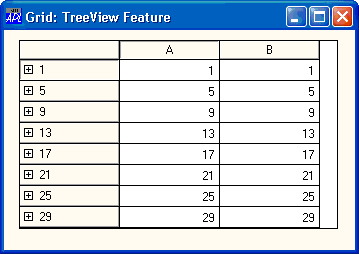
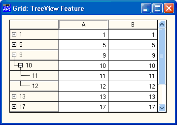

| Applies To: | Grid |
Description
The RowTreeDepth property specifies the structure of the rows in a Grid object. It is either a scalar 0 or an integer vector of the same length as the number of rows in the Grid. RowTreeDepth is similar to the Depth property of the TreeView object.
A value of 0 indicates that the corresponding row is a top-level row. A value of 1 indicates that the corresponding row is a child of the most recent row whose RowTreeDepth is 0; a value of 2 indicates that the corresponding row is a child of the most recent row whose RowTreeDepth is 1, and so forth.
When you set RowTreeDepth, the Grid is redrawn so that only rows with a RowTreeDepth of 0 are visible.
The RowSetVisibleDepth method can be used to make data visible to a specific depth.
'F'⎕WC'Form' 'Grid: TreeView Feature'
'F.G'⎕WC'Grid'(30 2⍴2/⍳30)
F.G.RowTreeDepth←30⍴0 1 2 2
The user can interact with the tree images to expand and contract rows of the Grid.
